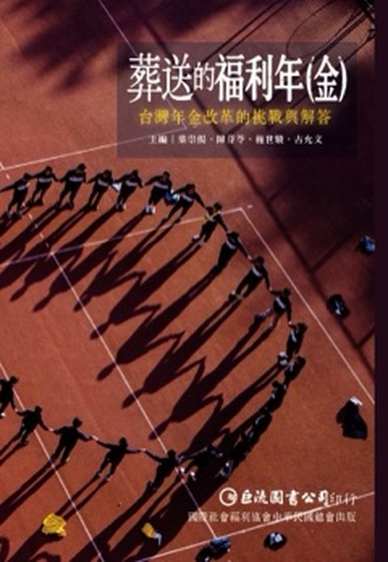
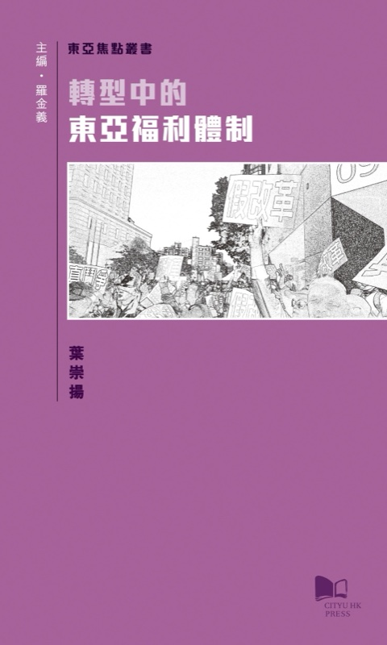

2026 · 編著
葬送的福利年（金）台灣年金改革的挑戰與解答
葉崇揚、陳芬苓、施世駿、古允文（編著）台北：巨流
直面台灣年金改革的難題——制度為何走到今日、又能往哪裡去。集合多位研究者，梳理挑戰與可能的解方。
內容簡介 →東吳大學社會學系教授。比較福利國家研究者，在東亞社會政策、年金政治與福利態度的交叉點上寫字——論文在此呼吸，一篇一篇，安靜地留下時代的輪廓。

葉崇揚、陳芬苓、施世駿、古允文（編著）台北：巨流
直面台灣年金改革的難題——制度為何走到今日、又能往哪裡去。集合多位研究者，梳理挑戰與可能的解方。
內容簡介 →
葉崇揚（獨著）香港：香港城市大學出版社
以台灣、日本、新加坡、韓國及香港為例，研究東亞各地在政治經濟結構轉型中，福利體制何以走向不同的改革方向——並反省既有「東亞福利體制」觀點的不足。
內容簡介 →NSTC 115-2410-H-031-023-SS3 · 國家科學及技術委員會
NSTC 114-2410-H-031-090 · 國家科學及技術委員會
NSTC 112-2410-H-031-039-MY2 · 國家科學及技術委員會
MOST 110-2410-H-031-052-MY2 · 科技部
MOST 109-2410-H-194-024 · 科技部共同主持人
MOST 108-2410-H-031-069-MY2 · 科技部
MOST 107-2410-H-031-065 · 科技部